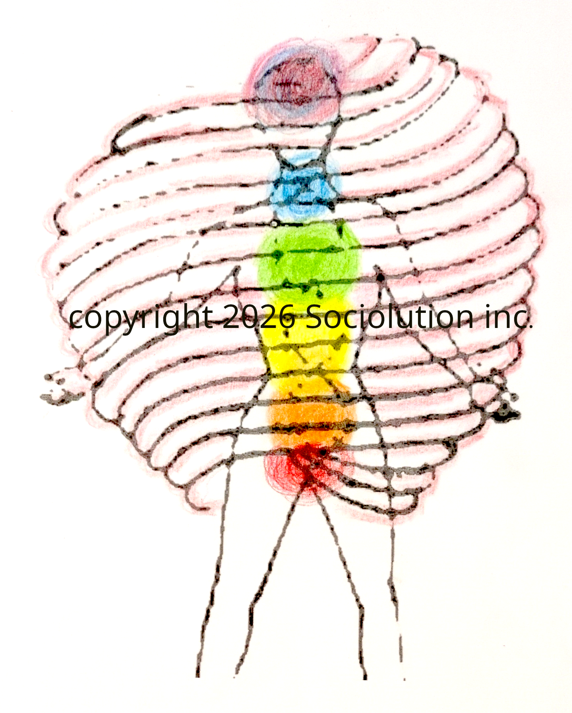

For individuals I offer polarity therapy. It's called energy balancing because when bio-energy flows freely without blockages it flows equally through both left & right sides of the body, or through upper and lower body. When these flows are balanced you have optimal functions.
Blocks of our energies by tensions in the muscles, often associated with thoughts and emotions, cause unbalanced flows. Polarity refers to how energies flow between poles -- right-left, top-bottom, etc. So energies can be under-active on one side, or over-active. Poles are identified as points of the body. Contacts of the poles helps enhance energy flows.
To relieve stress & joint pains is usually straightforward. Many other functions of the body, emotions, mind, & spirit can be enhanced. Let's talk about your wishes for optimal functioning. cmurray22@proton.me txt 613-291-7576
Experiencing polarity therapy helps you be more aware of feelings in the body, emotional feelings, and more or less mental acuity.
Gentle fingertip contacts. You may wear light comfortable clothing. Variable fees.
Circle of Energies for 2 to 6 friends
updated Nov 2026